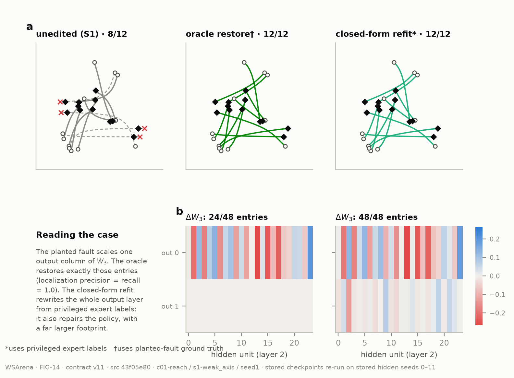

Case study: one planted fault, three outcomes
Failure → diagnosis → repair → result, on a single checkpoint. The unedited policy reaches 8 of 12 hidden goals; restoring the corrupted output column (oracle) or refitting the output layer from expert labels (closed form) reaches 12 of 12 — with very different footprints.

A natural-failure (S2) case and an LLM case are added when the corresponding runs exist.